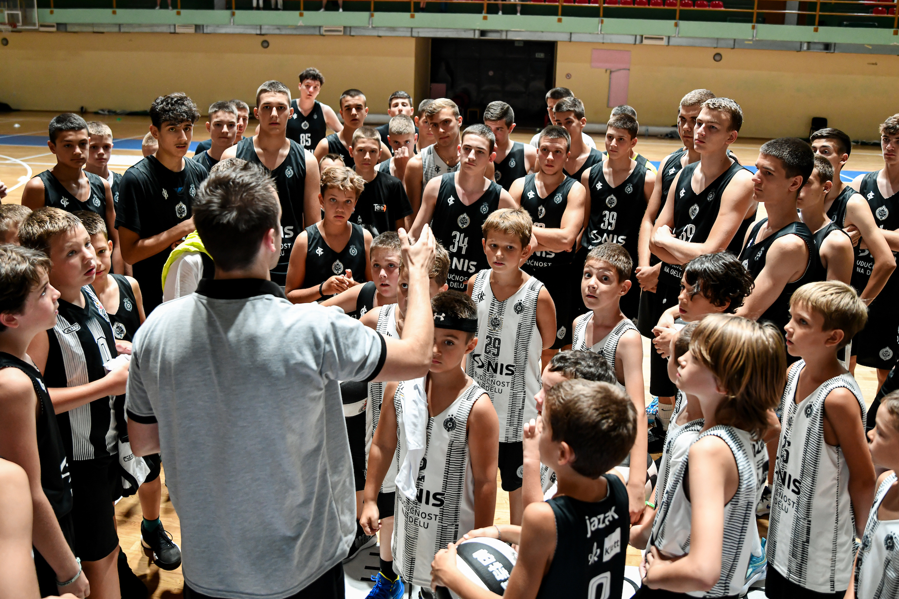

Letnji kamp OKK Novi Pazar se i na leto 2023. godine održava na Zlatiboru, i to u dve smene tokom jula i avgusta. Dečaci uzrasta od 7 do 18 godina, ali i devojčice uzrasta od 7 do 10 godina, mogu da treniraju i stiču košarkaško znanje od trenera Evrope, a sve po precizno kreiranom programu rada omladinske škole OKK Novi Pazar.
Glavni koordinator kampa, trener Žarko Vučurović, i ove godine će vršiti nadzor svih sportskih aktivnosti na kampu, a u ponudi je i program individualnog rada sa trenerom Vučurovićem, namenjen mladim igračima uzrasta od 16 do 18 godina. Pored vrhunskih trenera koji će sa decom raditi na poboljšanju njihovih košarkaških veština, obezbeđen je i stručan nadzor lekara, fizioterapeuta, kao i rad sa kondicionim trenerima u cilju poboljšanja motoričkih i fizičkih sposobnosti dece.
Pored treninga koji se održavaju dva puta dnevno, polaznike kampa čeka i bogat zabavni sadržaj, gde će učestvovati u mnogim takmičenjima i edukativnim radionicama. Cilj kampa je i da provedemo kvalitetno vreme u prirodi i na svežem vazduhu, pa ćemo tokom boravka na Zlatiboru kroz izlete obići lokalne kulturno-istorijske znamenitosti i bliže se upoznati sa lepotama ovog kraja.
I SMENA 25.07 - 01.08.2023.
II SMENA 01.08 - 08.08.2023
kamp@kkpartizan.rs , +38166 855 1013
